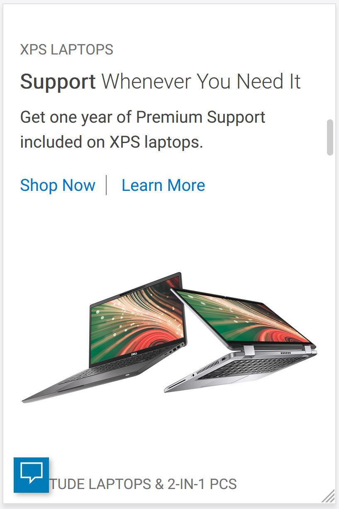
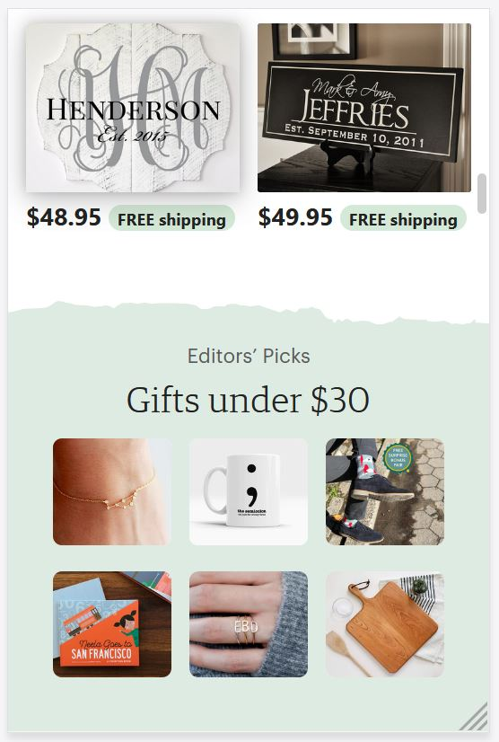
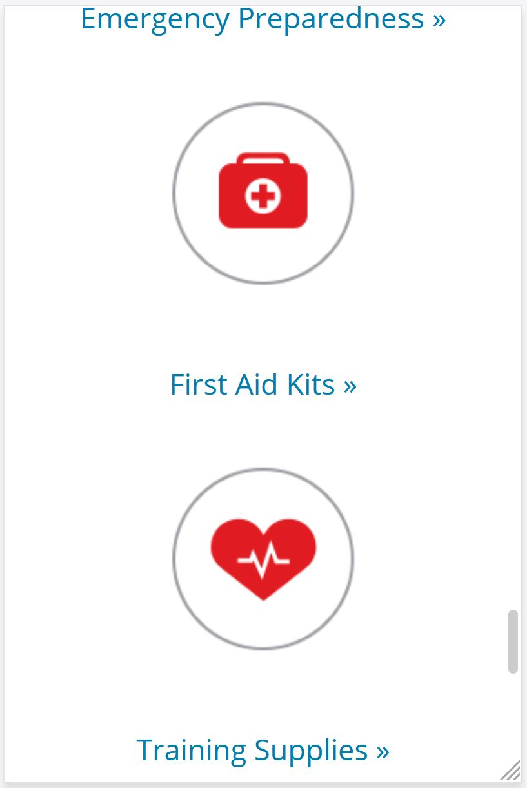

White Space
Dell
dell.com Dell's website has a ton of white space between each section, product and text. It is reminiscent of Apple's look. It does work. The eye is immediately drawn to the product and then over to the heading. There is also a good use of visial hierarchy. They have kept it simple.
Alignment
Etsy
etsy.com Etsy is all about displaying products so that you, the consumer, will purchase them. So, obviously there are a lot of items to place and the most efficient and visually appealing way it to place them in rows and columns that are nicely aligned. That is exactly what Etsy has done here. It is clean, orderly and makes sense. Their search functions work well too. They display things that you would have been looking for suggested purchase.
Contrast
Red Cross
redcross.org I love how the Red Cross used red as their contrast color. It was a bold choice considering people's aversion to blood. However, it is the perfect contrasting color to all of the white. It pops off the page. Your eye is drawn to it immediately. They have used it sparingly. Just enough to increase its emphasis.